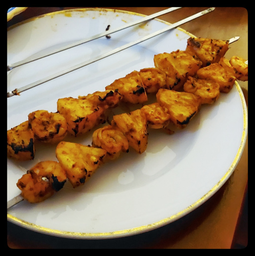

Jerk Pineapple Prawn Skewers
The spice mix, juicy pineapple, and grilled flavour combo is a world of good in one bite.

prawns
fresh pineapple
paprika
smoked paprika
garlic powder
cumin
oregano
thyme
chili flakes
salt
Cut fresh pineapple into bite-size chunks.
Spice mix: paprika, smoked paprika, garlic powder, cumin, oregano, thyme, chili flakes, salt.
In a mixing bowl, dose prawns and pinenapple in olive oil, then stir in spice mix until it's all coated.
Alternate prawns and pineapple on the skewers.
Grill on high, each side for a few minutes until the prawns are cooked.